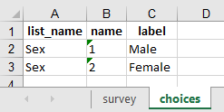
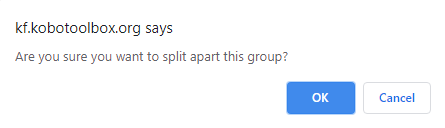
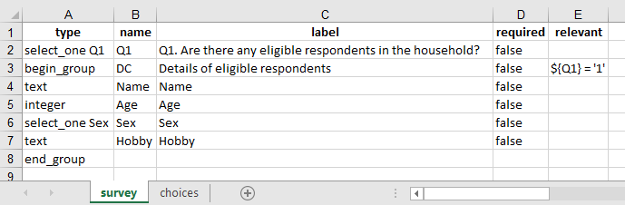
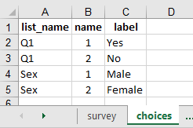
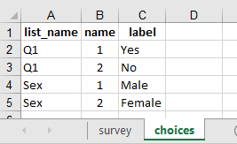

What do you need help with?
Search the knowledge base, browse our resources and visit our forum for more detail information
Search the knowledge base, browse our resources and visit our forum for more detail information
KoBoToolbox supports grouping a set/number of questions while designing a survey form. Users may need to group questions due to various reasons. Some maybe as follows:
To make the questionnaire systematic: Grouping a set of questions makes a questionnaire systematic (e.g. you could group your questions that have special linkage or attributes as Identifier, Section A, Section I or so on).
To display a set of questions in a screen: It’s possible to display a set of questions together on a screen during data collection if (and only if) you have grouped a set of questions. However, this may not be applicable if you are collecting data using Enketo.
To skip a group of questions: Adding a skip to a group could save your time rather than adding skip logics to all the questions individually. This should also keep your survey tool neat and clean.
To create roster questions: Grouping is a must if you wish to create a roster where you wish to repeat a group of questions (e.g. a household roster is a set of questions if you wish to collect information from all the household members dwelling under a same roof).
Draft a set of questions that you would wish to group together. Then press the CTRL Key (It may vary based on the OS used. The instruction here is based on the Windows OS) and select all the questions (with the help of your mouse) that you wish to group. You should see the questions getting highlighted to blue as shown in the image below:

Then press Create group with selected questions (marked under the red box) as shown in the image above. You should now be able to see your new group as shown in the image below. It should be slightly different (enclosed within a shaded box) then the normal question you generally see.

You can change the group label just like you do to change the question labels for other questions in KoBoToolbox Form Builder User Interface. Here I have changed the group label to Demographic Characteristics as shown in the image below:

Draft a question. Select the question that you have drafted. It highlights to blue. At the same time the icon (marked under the red box as shown in the image below) for Create group with selected questions also gets activated.

Now click the Create group with selected questions (icon) and you should be able to see the question has been grouped (despite the fact that there is only one question at the moment).

Add or modify questions as outlined below.
You are able to add a question within a group, whenever you feel like while designing a survey form in KoBoToolbox. For this, follow the instructions outlined below:
Hover your mouse (anywhere inside the group) where you wish to add a new question. You should see a plus sign (+) under the question. In the image below, I have hovered my mouse over the last question (Hobby). Press the plus sign that is inside the group (marked with a red box) to add a new question. (Note: If you press the other plus sign (+) which is located outside the group, you will be adding a question outside the group.)

You should now be able to see Add Question as shown in the image below:

You are able to remove question(s) from a group like you normally do by deleting question(s) in KoBoToolbox Form Builder User Interface. Hover your mouse on top of the question you wish to delete. Press the trash (bin) like icon. At this stage, the color of the question box you wish to delete changes to red. You should also see a text with Delete Question on top of the question that you wish to delete.

Once you click the delete button, you should get a confirmation dialogue box as shown in the image below. Click OK.

If you are not satisfied with the ordering of the questions within the group, you could re-order them by simply selecting a question (that is within a group) and dragging them to an appropriate place (either up or down as needed).

If needed, you could also drag them outside the group (to extract a question from a group).
If you wish to display the grouped questions on the same screen, press the gear like settings icon that has been marked under the red boxed as shown in the image below. Then select Show all questions in this group on the same screen as shown in the image below:

Alternatively, you could also group a set of questions and display them on the same screen through xlsform (if you are comfortable with xlsform) using field-list under the appearance column as outlined in the image below:
In the survey tab of your xlsform:

In the choices tab of your xlsform:

If you feel like you do not need a group of questions, you could un-group the grouped questions. For this simply click the trash like Delete button from the group header.

You should then get a dialogue box confirming you wish to split apart the group. Press OK.

After pressing the OK button, the group will disappear. The questions within the groups does not get deleted. It’s only the group that gets un-grouped as shown in the image below:

There are times when you need to skip a lot of questions based on the response from a previous question. You could do this in KoBoToolbox Form Builder User Interface following the instructions outlined below:
To skip a group of questions, you should have at least one controlling question on top of the grouped question. Press the settings icon from the grouped question as shown in the image below:

Then select Skip Logic and configure the skip logic as shown in the image below. To learn more on how to use skip logic, please visit our support article Adding Skip Logic to Your Form.

Alternatively, you could also do this in xlsform by following the instructions as outlined in the image below:
In the survey tab of your xlsform:

In the choices tab of your xlsform:

Questions within a roster can be answered multiple times. For example, in a household survey you might want to ask the name, age, gender and education status of every household members by creating a household roster.
To create a roster, create a group of questions following the instructions that has already been outlined above. Then under the group settings, select Repeat this group if necessary (marked under the red box as shown in the image below).

During an interview the enumerators will be able to enter the details to these questions as many times as required (as this method allows an infinite number of repeat group iterations).
Please Note: The structure of data from roster is different than the data you normally see with other variables or even groups. While downloading your data, you should see a different sheet for each roster (i.e. the number of additional sheets should be seen with the number of roster that you have within your survey form).
Sometimes your survey may demand you to control the repeating of questions in a roster with a value of a certain variable. In this case, you should modify your survey form in xlsform as KoBoToolbox Form Builder User Interface at the moment does not support this feature.
In the survey tab of your xlsform:

In the choices tab of your xlsform:

Please note: Instead of having an infinite number of repeat group iterations, this method will help you control the questions in the repeat group using repeat_count.
While working with grouping questions and repeating groups, sometimes you might need to include certain details (information) to a roster from a preceding roster. Designing such survey form is possible in KoBoToolbox using an indexed-repeat function in the xlsform. For example, you could use the name that has been recorded in a roster (previously) to link with other repeating group questions (like education etc.). For this, simply follow the instructions as outlined in the image below:
In the survey tab of your xlsform:

In the choices tab of your xlsform:

Screen seen while collecting data in Enketo:

KoBoToolbox also supports a much complex form of designing repeat group known as the nested repeat form design. Here you are able to add a roster within a roster (i.e. a repeat group question within a repeat group question). You could do this by following the instructions outlined in the image below:
Design a roster as shown in the image below (with the group name Demographic Characteristics) and then place another roster (with the group name List of Hobbies) within a roster (Demographic Characteristics) by following the steps outlined above under Creating a roster (repeating group of questions). You should then have a nested repeat form as shown in the image below:

Alternatively, you could also do this in xlsform by following the instructions as outlined in the image below:
In the survey tab of your xlsform:

In the choices tab of your xlsform:

Screen seen while collecting data in Enketo:

Please Note: You are able to collect data using the Nested Repeat in both Enketo and KoBoCollect android app. If you are using the KoBoCollect android app, please ensure that you are using the latest version as earlier versions may not function properly.